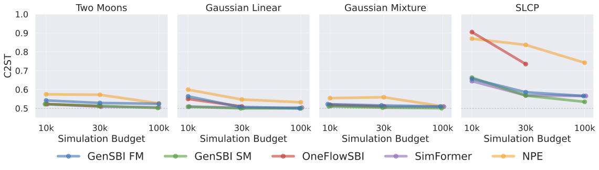
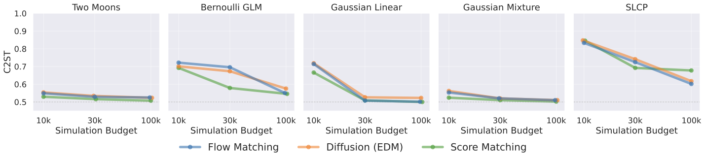
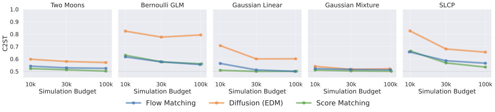

Benchmarks#
GenSBI is validated on a suite of inference tasks from the Simulation-Based Inference Benchmark (SBIBM). This page summarises the key results; for full details, see the GenSBI paper.
Benchmark Tasks#
The following five SBIBM tasks cover a range of parameter dimensionalities and posterior geometries:
Task |
dim(θ) |
dim(x) |
Key challenge |
|---|---|---|---|
Two Moons |
2 |
2 |
Bimodal crescent-shaped posterior |
Gaussian Linear |
10 |
10 |
Moderate-dimensional Gaussian posterior |
Gaussian Mixture |
2 |
2 |
Multi-scale posterior structure |
SLCP |
5 |
8 |
Complex multimodal geometry (4 modes) |
Bernoulli GLM |
10 |
10 |
Discrete data, correlated prior |
All benchmark datasets are available on HuggingFace, and the gensbi-examples package provides utilities and notebooks to reproduce every result shown here.
Evaluation Metric: C2ST#
Posterior quality is measured using the Classifier Two-Sample Test (C2ST) (Lopez-Paz & Oquab, 2017). A binary classifier is trained to distinguish samples drawn from the learned posterior and the reference posterior:
C2ST = 0.50 → the classifier cannot tell them apart → perfect posterior recovery
C2ST → 1.0 → large discrepancy between learned and reference posteriors
A C2ST score ≤ 0.55 is generally considered very good.
Posterior Quality#
Comparison with the Literature#
The figure below compares GenSBI’s best C2ST scores (selecting the best architecture and generative method at each simulation budget) against three baselines: OneFlowSBI, SimFormer, and NPE (from the sbi library).
{kind=link}

At the largest simulation budget of 10⁵, GenSBI performs on par with or improves on all baselines across every task. Gaussian Linear and Gaussian Mixture achieve C2ST scores of 0.500 and 0.501, respectively — essentially perfect posterior recovery. Two Moons reaches 0.502, closely matching SimFormer (0.505). SLCP and Bernoulli GLM, the two most challenging tasks, also show results in line with the best available methods. GenSBI achieves these results with a nearly uniform training configuration across all tasks.
Detailed Comparison at 30k Simulations#
The figures above show results across multiple simulation budgets. The table below zooms in on a single budget — 3×10⁴ simulations — and reports C2ST accuracy for all GenSBI model variants alongside three literature baselines. Best value per task in bold; second-best in italics.
Abbreviations: FM = flow matching, SM = score matching, EDM = Elucidating the Design Space of Diffusion-Based Generative Models.
Method |
Two Moons |
Gauss. Linear |
Gauss. Mixture |
SLCP |
Bernoulli GLM |
|---|---|---|---|---|---|
GenSBI FM (Flux1) |
0.53 |
0.51 |
0.52 |
0.72 |
0.70 |
GenSBI SM (Flux1) |
0.52 |
0.51 |
0.51 |
0.69 |
0.58 |
GenSBI FM (Flux1Joint) |
0.53 |
0.51 |
0.52 |
0.59 |
0.58 |
GenSBI SM (Flux1Joint) |
0.51 |
0.50 |
0.50 |
0.57 |
0.58 |
OneFlowSBI |
0.51 |
0.51 |
0.51 |
0.73 |
0.58 |
SimFormer |
0.51 |
0.50 |
0.51 |
0.57 |
0.59 |
NPE |
0.57 |
0.55 |
0.56 |
0.84 |
0.65 |
GenSBI SM (Flux1Joint) — score matching with the joint architecture — matches or improves on all baselines across all five tasks.
Architecture Comparison: Flux1 vs Flux1Joint#
GenSBI provides two transformer architectures: Flux1 (conditional density estimation) and Flux1Joint (joint density estimation). Each can be combined with three generative methods: flow matching (FM), score matching (SM), and EDM Diffusion.

Best C2ST as a function of simulation budget for the Flux1 architecture. Lower is better; 0.5 = perfect match.

Best C2ST as a function of simulation budget for Flux1Joint. Flux1Joint achieves stronger performance than Flux1, especially on SLCP.
Key observations:
All three generative methods converge to similar C2ST scores as the simulation budget increases, indicating that the methods are effectively interchangeable.
On simpler tasks (Two Moons, Gaussian Mixture, Gaussian Linear), all generative methods reach near-optimal scores (≤ 0.52) already at 3×10⁴ simulations.
On harder tasks (SLCP, Bernoulli GLM), flow matching and score matching converge faster than EDM.
Flux1Joint tends to match or improve on Flux1 across all tasks, consistent with an advantage of joint density estimation for tasks with complex posterior geometries.
Computational Cost#
All computational benchmarks below are measured on the Two Moons task (a low-dimensional problem) using a single NVIDIA Tesla V100 GPU, with batch size 256 and 50,000 training steps. Timings will be higher for larger models and higher-dimensional tasks.
Architecture |
Method |
Training speed (it/s) |
Training time (50k steps) |
Solver steps |
Sampling time (10⁴ samples) |
|---|---|---|---|---|---|
Flux1 |
Flow Matching |
4.58 |
~3.0 h |
100 |
6.9 s |
Flux1 |
Score Matching |
4.50 |
~3.1 h |
1000 |
24.1 s |
Flux1 |
EDM |
4.73 |
~2.9 h |
18 |
8.3 s |
Flux1Joint |
Flow Matching |
11.56 |
~1.2 h |
100 |
6.4 s |
Flux1Joint |
Score Matching |
11.63 |
~1.2 h |
1000 |
42.3 s |
Flux1Joint |
EDM |
11.51 |
~1.2 h |
18 |
5.3 s |
Key takeaways:
Within a fixed architecture, the three generative methods have comparable training throughput — the choice of generative method has no meaningful impact on training cost.
Flux1Joint trains approximately 2.5× faster than Flux1 (11.5 vs 4.6 iterations per second).
Sampling speed varies by generative method: EDM is fastest (18 solver steps), flow matching is moderate (100 steps), and score matching is slowest (~1000 steps).
Even in the slowest configuration, drawing 10,000 posterior samples takes at most ~42 seconds.
All benchmark models can also be trained on a consumer-grade NVIDIA RTX 4070 GPU (12 GB VRAM) with batch size 256.
Calibration#
Beyond C2ST, GenSBI posteriors are validated using several calibration diagnostics: the TARP test (Tests of Accuracy with Random Points), SBC (Simulation-Based Calibration) rank histograms, L-C2ST (Local C2ST), and marginal posterior coverage checks. All models trained with 10⁶ simulations produce well-calibrated posteriors — the TARP coverage curves fall on the diagonal within Jeffreys 95% confidence intervals across all tasks and posterior geometries.
The example notebooks include full calibration plots for each benchmark task.
Summary#
GenSBI |
|
|---|---|
Posterior quality |
On par with or improving on existing baselines across all SBIBM tasks |
Best configuration |
Flux1Joint with score matching |
Generative method interchangeability |
Flow matching, score matching, and EDM converge to comparable quality |
Training cost |
1–3 hours on a single V100; feasible on consumer GPUs |
Sampling speed |
10,000 posterior samples in 5–42 seconds |
Calibration |
Well-calibrated posteriors verified by TARP diagnostics |
Configuration |
Nearly uniform hyperparameters across all tasks |